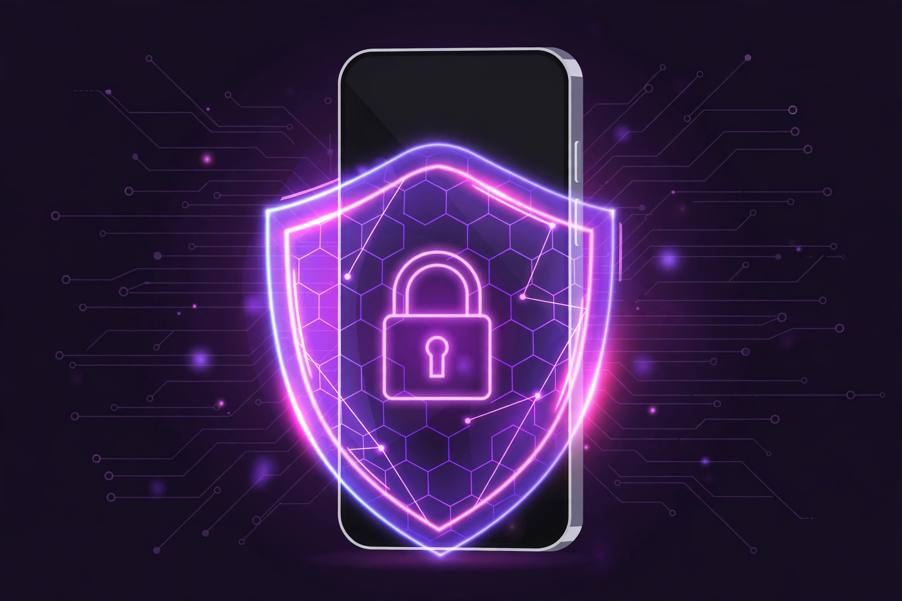
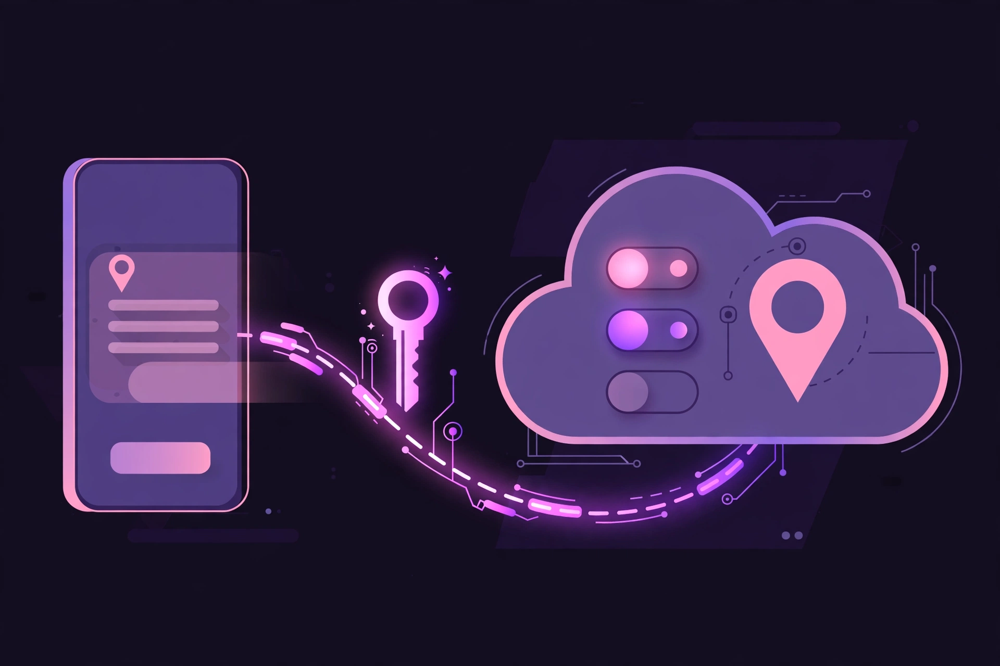
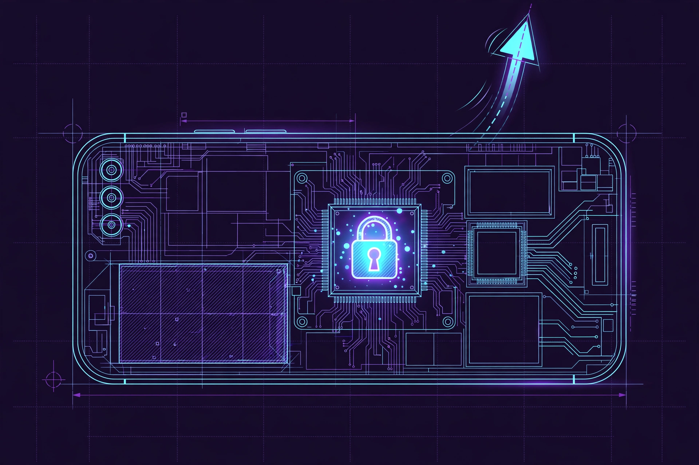

← back to hub
🛡️
LockShield
A remote lock for Android phones. If a phone is lost, stolen — or its installments stop — the owner locks it from the web, and the phone turns into a cage it can't escape.
Status: v1 live · current build v0.0.9 · tested on real phones

What it is
LockShield has two parts: a small Android app installed on the phone as its Device Owner, and a web panel the owner controls. From the panel, the owner can lock or unlock the phone at any time, from anywhere.
A locked phone can't be factory-reset, can't boot into safe mode, can't add new users, and can't move files over USB. It just shows the owner's message and waits. Only the owner's unlock — protected by a PIN — opens it again.
Android Device OwnerCloudflare cloud panelSigned commandsWorks offline-safe

How it works
- 1Install & enroll — the app is set as the phone's Device Owner and pairs with the owner's panel. From now on, it guards the phone.
- 2The phone checks in — every minute it quietly asks the cloud panel: "should I be locked?" and reports that it's alive.
- 3The owner taps LOCK — the command travels with a cryptographic signature and a timestamp, so a fake or replayed old command is rejected by the phone.
- 4The phone cages itself — lock screen up, escape routes closed. Reset, safe boot, extra users, USB transfer: all blocked by Android itself.
- 5Dead-man's switch — if the phone can't reach the panel for too long (default 24 hours — say the SIM is pulled), it locks itself automatically. Going silent doesn't save it.
- 6Unlock — the owner taps UNLOCK in the panel; the phone opens. The app's own settings stay behind the owner's PIN, with growing delays against guessing.
What's built so far
v1 — software lockcomplete
v2 — ROM-level lockin the lab
- ✅Remote LOCK / UNLOCK / WIPE from the web panel
- ✅Device-owner cage — no factory reset, no safe boot, no extra users, no USB file transfer, no clock tampering
- ✅Signed commands (RSA) with a 5-minute freshness window — replay attacks bounce off
- ✅Owner PIN on the phone, with anti-brute-force backoff (30 seconds growing to 1 hour)
- ✅Dead-man's switch — self-locks when the server goes quiet too long (per-phone grace, default 24h)
- ✅LOCK PENDING tracking — the panel shows when a lock command actually landed on the phone
- ✅Self-updating app — new versions install silently from the panel; Android still rejects anything not signed with our own key
- ✅Tested end-to-end on real hardware: Redmi Note 7 & Galaxy A10s
Honest limits of v1: if the app is force-stopped in the first seconds after boot, polling pauses until the app is opened once (the cage policies still hold). And a full custom-ROM reflash can defeat a software-only lock — closing that gap is exactly what v2 is for.

Future roadmap
- 🔬v2 — ROM-level persistence: build LockShield into the system itself (system app + patched recovery), so the lock survives even a reflash. Designed for unlocked bootloaders on purpose — every recovery step works phone-to-phone, no PC needed.
- 📡Hardware-level kill research: modem / persistent-storage flags that keep a phone locked at the deepest level Android allows.
- 🗄️Fleet scaling: move device state from key-value storage to Durable Objects, so hundreds of phones can check in without quota worries.
- 🌍Maybe public: the code is already open on GitHub. If LockShield proves useful for everyone, it may grow into a public release.
View the code on GitHub